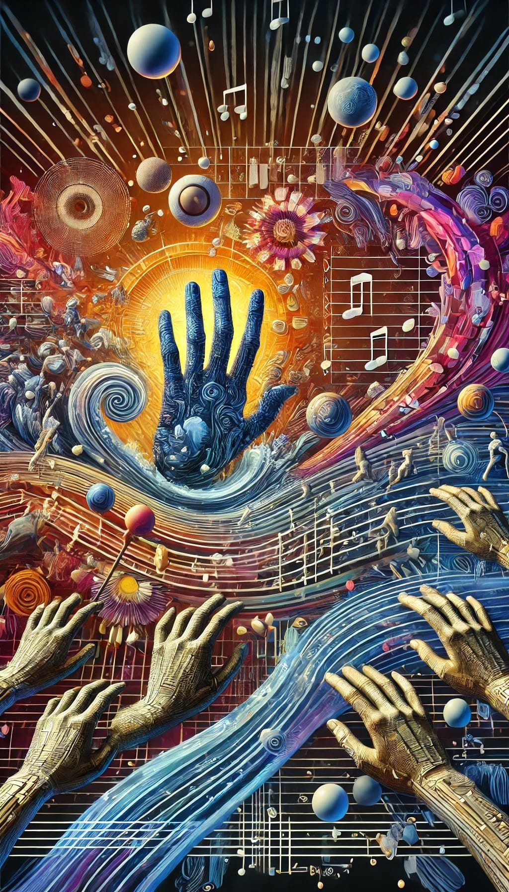

The Art of Touch: A New Frontier in Sensory Experience
Touch is the least developed of the senses as a medium. While sight and sound have been extensively studied, refined, and incorporated into various art forms and technologies, the sense of touch has remained relatively untapped. However, recent advancements in haptic technology, coupled with a growing understanding of tactile perception, have opened up new possibilities for the development of a true "art of touch." What follows sets out the emerging field of tactile art and what it could change about how people interact with media and make work.
The Field in Plain Terms
Handed an unlabelled envelope, most people can tell whether it holds paper or a card before opening it. Fingertips resolve texture at a scale the eye misses at arm's length, and the reading happens without deliberation (Johansson and Flanagan 2009). A brief contact is often enough to identify an object (Klatzky and Lederman 1995). Almost nothing in art or technology is built for that channel.
Sight and hearing have centuries of accumulated craft: perspective, harmony, montage, counterpoint. Touch has braille and a phone that buzzes. Importance is not what the gap tracks. Touch establishes that things are real, and a separate slow pathway in the skin carries the affective side of contact rather than its texture (McGlone, Wessberg, and Olausson 2014), which is why its absence is reported as the worst part of isolation (Field 2014). The gap is that the instruments were never built.
Two things make now different. Actuators can render texture, friction, and shape rather than only vibrating, and enough is understood about the receptors in skin to know what to render, which Gallace and Spence (2014) survey. That is roughly the position sound reproduction was in before recording: the physics understood, the transducers arriving, the grammar unwritten.
What is missing is the grammar. Music has scales and cadences that let a composer work; touch has no equivalent vocabulary, so each piece starts from nothing. Whether a tactile art form arrives depends less on better hardware than on whether such a vocabulary gets built.
The Theory of Touch
At the heart of this new art form is the "Theory of Touch," a framework that aims to structure and categorize tactile sensations in a way similar to how music theory organizes sound. This theory provides a language and set of principles for creating, analyzing, and experiencing touch-based art.
Key Elements of the Theory of Touch
- Touch Notes: These are the fundamental units of tactile sensation, analogous to musical
notes. They form the building blocks from which more complex tactile experiences can be created.
Examples include:
- Tap: A brief, localized touch sensation.
- Variations: Light Tap, Firm Tap, Rapid Tap
- Press: A sustained, localized pressure sensation.
- Variations: Soft Press, Hard Press, Pulsating Press
- Vibration: A rapid, oscillating sensation.
- Variations: Low Frequency Vibration, High Frequency Vibration, Amplitude-Modulated Vibration
- Swipe: A moving touch sensation across the skin.
- Variations: Slow Swipe, Fast Swipe, Circular Swipe
- Texture: A sensation mimicking surface qualities.
- Variations: Smooth, Rough, Bumpy, Ridged
- Stretch: A sensation of skin being gently pulled or stretched.
- Variations: Uniform Stretch, Directional Stretch, Pulsating Stretch
- Tap: A brief, localized touch sensation.
- Touch Scales: Organized sequences of touch notes that create meaningful patterns. These
could be used to convey more complex information, emotions, or sensations. Examples include:
- Emotional Gradient Scale:
- Calmness: Slow, gentle, rhythmic presses
- Contentment: Soft, warm, sustained press
- Interest: Light, rapid taps interspersed with short swipes
- Excitement: Quick, alternating vibrations and taps, increasing in intensity
- Elation: Rapid, intense vibrations combined with expansive swipes
- Textural Exploration Scale:
- Smooth: Continuous, even pressure
- Slightly Rough: Light, rapid vibrations
- Bumpy: Sequence of firm taps
- Ridged: Alternating firm presses and releases
- Very Rough: Intense, irregular vibrations
- Rainfall Intensity Scale:
- Light Drizzle: Sporadic, very light taps
- Steady Rain: Rhythmic, moderate taps
- Heavy Downpour: Rapid, intense taps combined with vibrations
- Thunderstorm: Intense taps and vibrations, interspersed with long, powerful vibrations (thunder)
- Musical Rhythm Scale:
- 4/4 Time: Steady, alternating soft and firm taps
- Waltz Time: Repeating pattern of one firm tap followed by two soft taps
- Syncopated: Irregular pattern of taps and short vibrations
- Directional Communication Scale:
- Forward: Series of swipes moving from back to front
- Backward: Series of swipes moving from front to back
- Left/Right: Alternating swipes moving left and right
- Up/Down: Alternating swipes moving up and down
- Emotional Gradient Scale:
- Touch Harmony: The simultaneous combination of different touch notes, creating complex, layered sensations similar to chords in music.
- Touch Rhythm: The timing and pattern of haptic sensations, used to create recognizable tactile patterns or convey temporal information.
- Touch Timbre: The quality or "color" of a haptic sensation, differentiating between sensations that have the same intensity and duration but feel different (e.g., rough vs. smooth).
- Touch Dynamics: The variation in intensity of haptic feedback over time, allowing for more expressive and nuanced tactile experiences.
- Touch Polyphony: Multiple independent lines of haptic feedback occurring simultaneously, enabling complex, multi-layered tactile experiences.
These elements of the Theory of Touch demonstrate how sequences of Touch Notes can be combined to create more complex and meaningful tactile experiences. They could be used in various applications, from enhancing music and film to providing non-verbal communication in virtual environments.

Universe 00110000
Technological Foundations
The art of touch is made possible by advancements in haptic technology, particularly in the field of inaudible frequency feedback:
- Ultrasonic Haptics: Using high-frequency sound waves (above 20kHz) to create localized, precise tactile sensations without producing audible sound.
- Infrasonic Haptics: Employing very low-frequency vibrations (below 20Hz) to generate deep, full-body sensations that can be felt but not heard.
- Directional Haptics: Technologies that can focus tactile sensations on specific areas of the body, allowing for more nuanced and spatially varied experiences.
- Haptic Synthesizers: Devices capable of generating a wide range of tactile sensations, analogous to musical synthesizers.
Applications and Possibilities
The art of touch has the potential to revolutionize various fields:
Standalone Haptic Art
Artists can now create purely tactile compositions, experienced through touch alone. This opens up a new form of abstract art, where the "canvas" is the human body, and the "paint" is a carefully orchestrated series of touch sensations. Haptic sculptures could provide different sensations as people interact with them, creating a dynamic and personalized art experience.
Film and Television Enhancement
Movies and TV shows could include a haptic track, similar to a soundtrack, that provides tactile sensations synchronized with the visuals. This could enhance emotional moments, action scenes, or convey subtle environmental cues, dramatically increasing viewer immersion.
Music Experience Augmentation
Music could be accompanied by composed haptic sensations, adding a new dimension to the listening experience. Different instruments or elements of a song could be assigned unique tactile sensations, opening up new avenues for music appreciation and composition.
AR and VR
In augmented reality (AR), we will be able to touch the objects, making them feel real and interactive. In virtual reality (VR), precise haptic feedback could make virtual objects feel real, dramatically enhancing the sense of presence.
Live Performances
Concerts, theater productions, and dance performances could incorporate haptic elements, allowing the audience to "feel" the performance in a new way. This could create a more immersive and emotionally impactful experience.
Conclusion
The art of touch represents a new frontier in human expression and experience. By harnessing the power of advanced haptic technologies and applying the principles of the Theory of Touch, we stand on the brink of a revolution in how we create, consume, and interact with art and media. As this field develops, it promises to enrich our sensory world, offering new ways to communicate, express, and experience emotion and ideas. The future of art may well be one we can see, hear, and feel in the most literal sense.
References
- Field, Tiffany. Touch. 2nd ed., MIT Press, 2014.
- Gallace, Alberto, and Charles Spence. In Touch with the Future: The Sense of Touch from Cognitive Neuroscience to Virtual Reality. Oxford University Press, 2014.
- Johansson, Roland S., and J. Randall Flanagan. "Coding and Use of Tactile Signals from the Fingertips in Object Manipulation Tasks." Nature Reviews Neuroscience 10, no. 5, 2009, 345–359.
- Klatzky, Roberta L., and Susan J. Lederman. "Identifying Objects from a Haptic Glance." Perception & Psychophysics 57, no. 8, 1995, 1111–1123.
- McGlone, Francis, Johan Wessberg, and Håkan Olausson. "Discriminative and Affective Touch: Sensing and Feeling." Neuron 82, no. 4, 2014, 737–755.